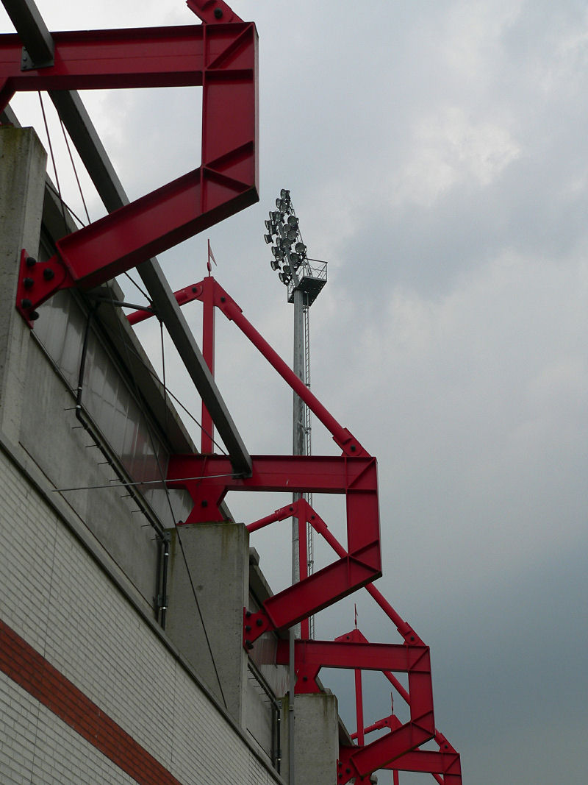

Na een warme en zonnige open dag betrekt de lucht boven het Ossche Kuipje.
Matondo beleeft een leuke seizoens-ouverture als hij uit een voorzet van
Vandamme in de 23e min. 0-1 binnen tikt.
Trieste ambiance in het gastenvak.
Ger Senden maakt aantekeningen.
De kwaliteitsarme wedstrijd laat een iets beter Top Oss zien.
Opstelling: Tyton, Saeijs, Kah, De Jong, Gillis, Bodor, Meeuwis, Vormer,
Vandamme, Hadouir, Matondo.
Vrije trap Oss die niks oplevert.
Ruststand 0-1. Vanwege het slechte weer wordt de rust fors verlengd.
Een oud-RJC'er: Davy Zafarin. Hij werd na zijn wissel in de tweede helft
toegezongen door de Rodasupporters.
De familie Hadouir.
Al vrij snel in de tweede helft kunnen de spelers weer inrukken vanwege het
onweer. Gevaarlijk spel derhalve.
Kah betast Vrede onzedelijk en maakt zich vervolgens snel uit de buurt van
het kermende slachtoffer. De EHBO snelt toe.
De Jong neemt een vrije trap.
Het hoogtepunt van de wedstrijd is echter een gigantische knal veroorzaakt
door een bliksem-inslag achter de crazy-side. De wedstrijd
wordt onmiddellijk gestaakt.
Knikkergrote hagelstenen.
Pa Vrede, altijd goed voor prima verhalen.
De Roda-selectie vertrok al vroeg waardoor we voor verder vertier aangewezen
waren op deze gezellige Brabo's.